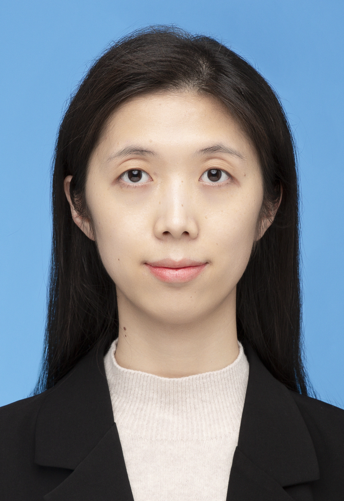

|
Xiaowen Zhang
Ph.D. Student
Department of Computer Science and Software Engineering (CSSE)
Concordia University
Montreal, Canada
|

|
Biography
I am a second-year PhD student at Concordia University, supervised by Prof. Shin Hwei Tan. I hold a Master’s degree in Computer Science and Engineering from Southern University of Science and Technology, which I completed in 2021. My research interests include program analysis, software testing, and bug detection."
Publications
Experiences
Grants
-
Concordia International Tuition Award of Excellence
2023-2027
-
Concordia Split Graduate Fellowship GCS,
2023-2024
-
Second Prize in the National (China) College Student Software Testing Competition Final
2020
-
SUSTech Outstanding Student Scholarship
2016
-
SUSTech Entrance Scholarship
2015
Teaching
-
Concordia University
- SOEN345 Software Testing, Verification and Quality Assurance
Fall 2024
-
Southern University of Science and Technology
- CS304 Software Engineering
Spring 2019-2021
- CS409 Software Testing, Verification and Quality Assurance
Fall 2020